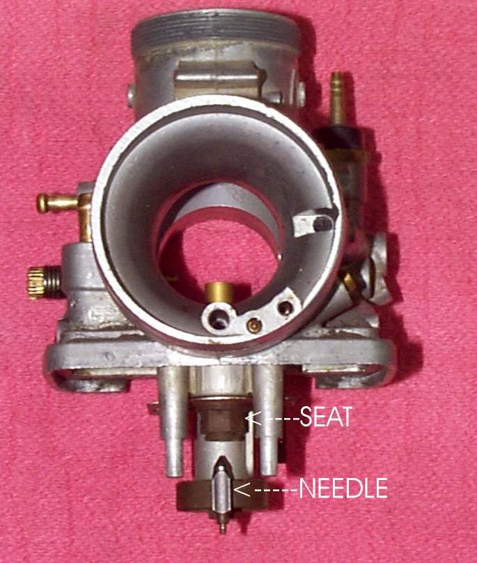
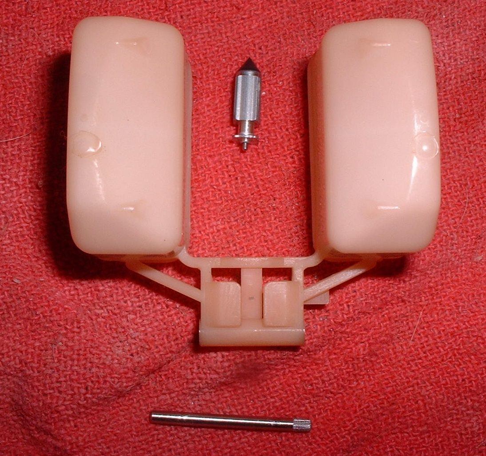

The float needle valve is a small brass seat with a needle that fits in it. The float presses the needle shut when the bowl is full, and lets it open when the level drops. It sits at the top of the float bowl in the carburettor. It is a wear part, because grit and old fuel stop it sealing.
What it does
It lets fuel into the bowl and stops it at the set level. The tip of the needle is steel or rubber. If it leaks, fuel pours out of the overflow tube, floods the engine, or runs into the crankcase and thins the oil.
Signs it is worn or failing
- Fuel from the overflow tube when the tap is on: Fuel pours out of the carburettor overflow pipe.
- Flooded engine or a strong smell of fuel: Engine is flooded.
- Fuel level in the sump or oil smelling of fuel: Oil smells of fuel.
- A needle tip with a visible groove worn in it.
When to replace it
If tapping lightly on the carburettor body with a plastic tool frees a stuck needle, clean it and check again. If the leak returns, or the tip has a groove, replace needle and seat as a pair.
What to match when buying
- Carburettor make and model.
- Needle and seat as a set, with the same size. Rubber tip or steel tip as the original.
- Genuine maker parts. Copy kits often have poor quality.
Fitting notes
- Put a drop of light oil on the needle so it moves freely at the first fill.
- Check the float height after fitting. See Measure and set the carburettor float height.
- Turn the fuel tap off when the bike is parked.